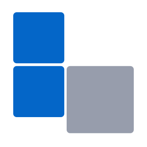
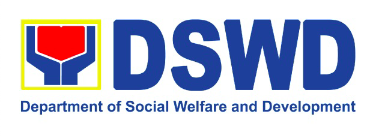

02. Work Experience
Software Developer III
Dona Alejandra Inc. — Quezon City
- Led development and maintenance of the company's core HRIS platform using PHP 8, CakePHP, MySQL, jQuery, and JavaScript, delivering six major features that improved system performance by 25%.
- Spearheading the migration of the legacy HRIS to Laravel 12, leveraging API integrations and a microservices architecture to enhance scalability, security, and system flexibility.
- Collaborated with cross-functional teams (Project Manager, BA, QA) to translate complex requirements into scalable, maintainable solutions — achieving zero critical post-release issues.
- Optimized and refactored legacy code, reducing average page load times by 30% and improving application responsiveness across multiple modules.
- Designed and implemented user-driven UI enhancements and workflow automations, cutting manual HR processing time by 40%.
- Mentored junior developers on CakePHP and modern PHP practices, improving code quality, consistency, and overall team velocity.
- Proactively adopted modern tools and technologies including automated testing frameworks and CI/CD pipelines — resulting in a 50% reduction in system errors and faster deployment cycles.
Web Developer

BStech Solutions — Calasiao, Pangasinan- Developed and maintained 10+ custom web-based systems using CodeIgniter, PHP, HTML4/5, CSS, and JavaScript, streamlining operations for clients across retail, logistics, and HR.
- Improved system performance by up to 35% through backend optimizations and front-end code refactoring.
- Reduced client-reported bugs by 40% year-over-year through proactive debugging and unit testing.
- Upgraded outdated UI components to responsive, modern layouts, resulting in a 25% increase in user satisfaction.
- Implemented version control with Git/GitHub to improve team collaboration and reduce deployment errors.
- Delivered projects 20% faster than initial estimates by automating repetitive tasks and optimizing workflows.
Web Developer Freelance
BStech Solutions — Calasiao, Pangasinan
Office Staff
 Department of Trade and Industry — Dagupan City
Department of Trade and Industry — Dagupan City
- Maintained and audited a centralized database of business names, ensuring 100% data accuracy.
- Processed business name registration and renewal applications, optimizing workflow for timely approvals.
- Designed professional seminar tarpaulins and marketing materials using Adobe Photoshop.
Junior Programmer
Honda Cars Pangasinan Inc. — Calasiao
- Upgraded and maintained the company's internal Accounting Information System using PowerBuilder and SQL, reducing monthly reporting errors by 30%.
- Optimized database queries and application logic, reducing system lag and boosting efficiency.
- Streamlined data handling processes, resulting in a 20% decrease in processing time for financial transactions.
Team Supervisor
Philippine Statistics Authority — Calasiao
- Supervised a team of 12 enumerators during the 2015 POPCEN, ensuring 100% coverage and data accuracy.
- Achieved 100% on-time submission of field reports through effective scheduling and daily progress monitoring.
- Conducted spot-checks and quality reviews, reducing data discrepancies by 35%.
Enumerator

Department of Social Welfare and Development — San Fernando- Conducted detailed household interviews using the Listahanan software, collecting data from over 300 families.
- Ensured 99% data accuracy by cross-verifying entries and resolving inconsistencies on-site.
- Streamlined data encoding, reducing reporting time by 20%.